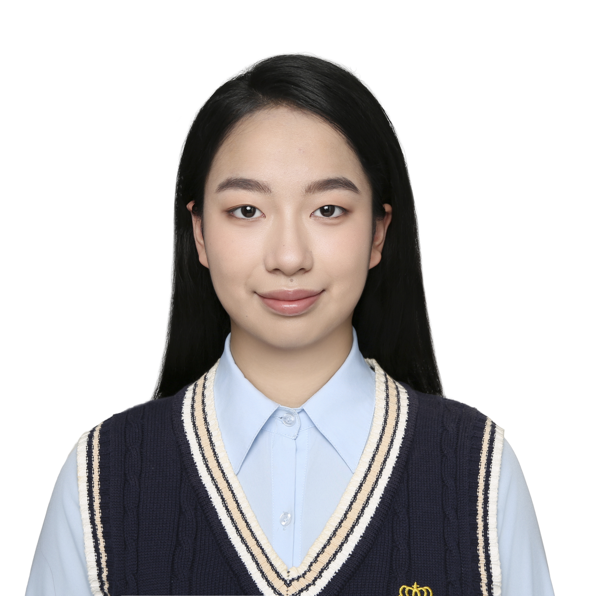
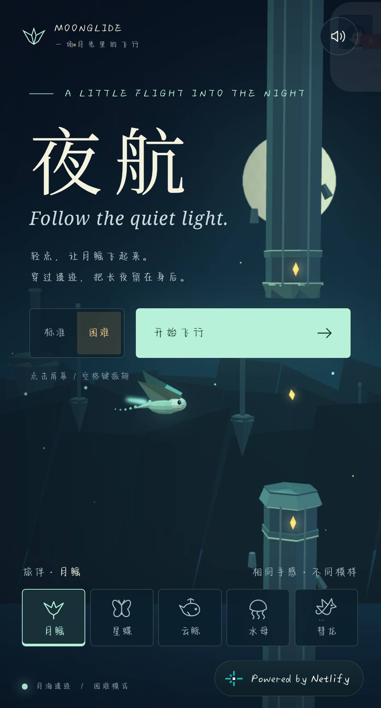
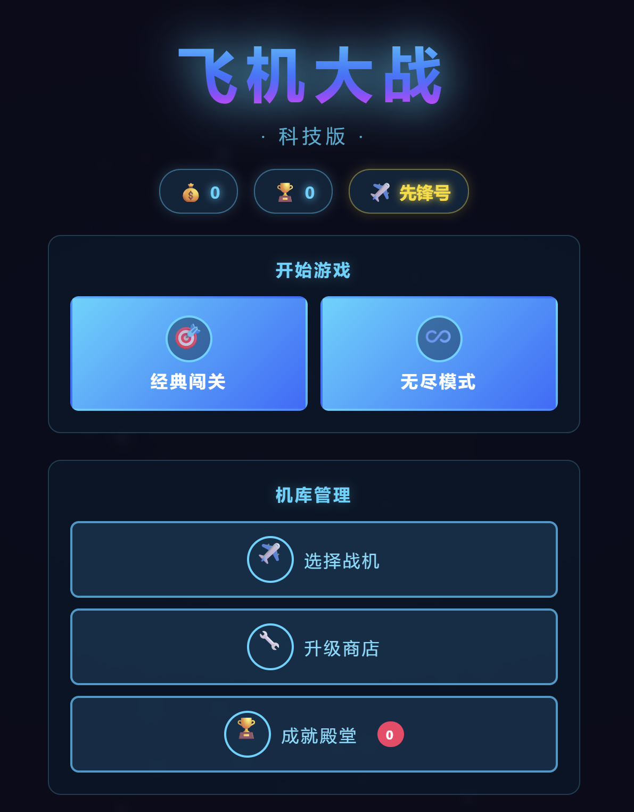
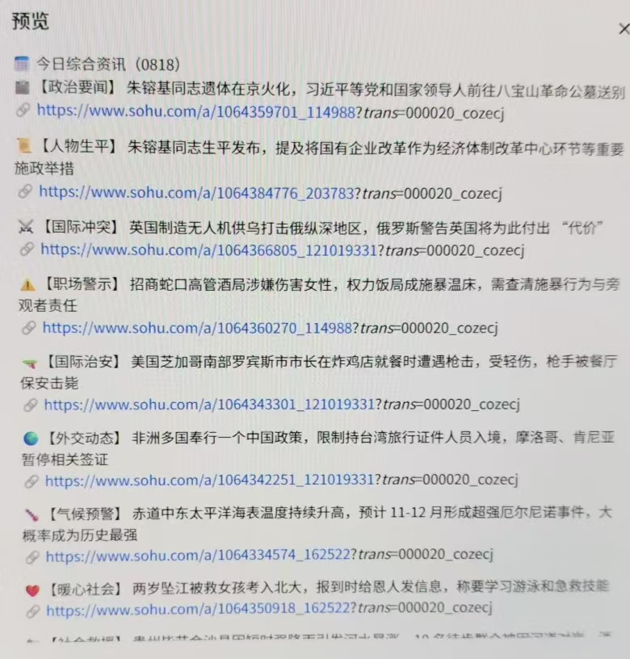
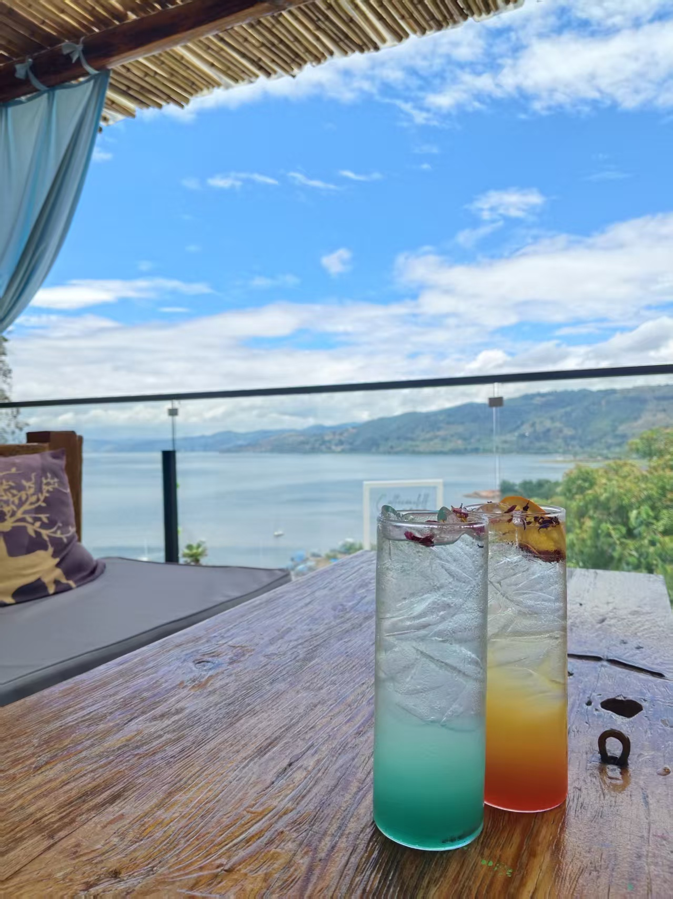
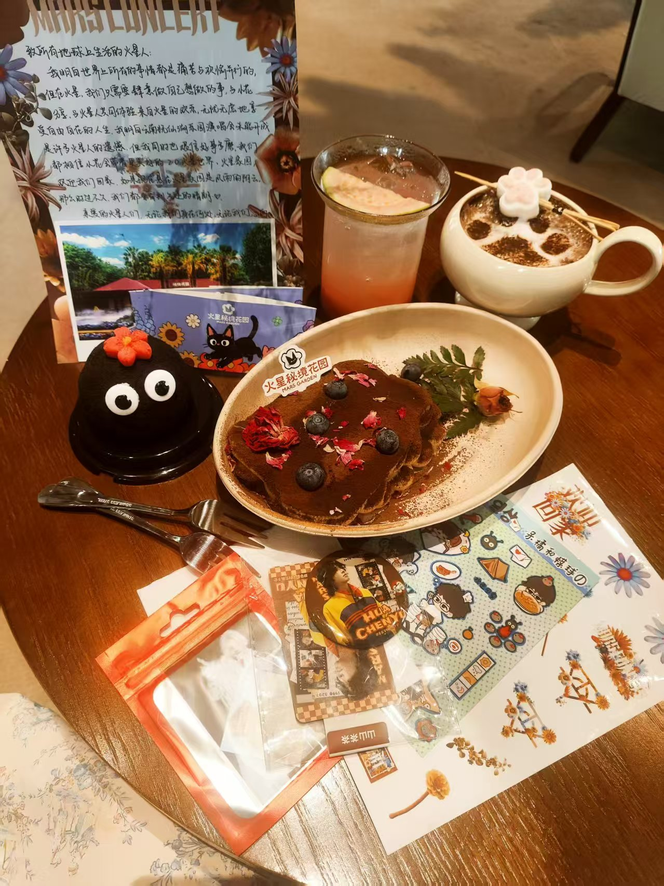
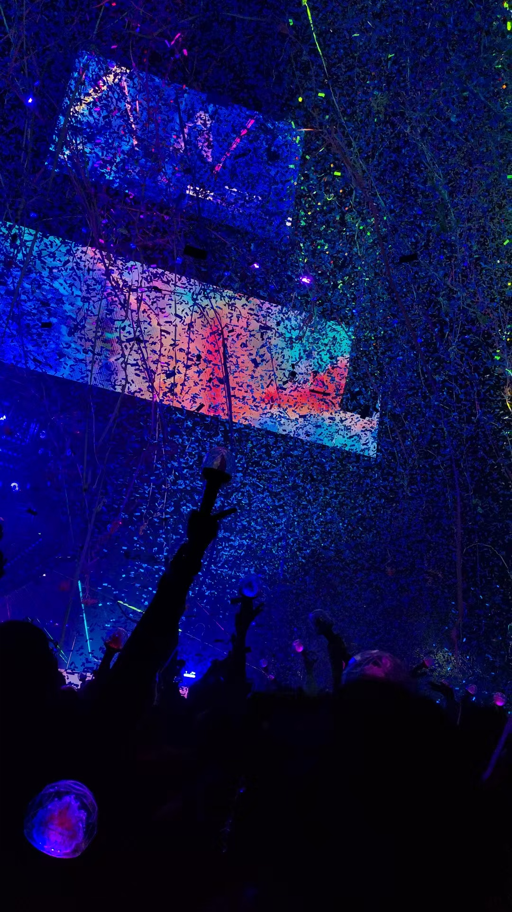

已展示的学习证书
已获得达摩院 AI 训练师高级、大模型 Clouder、MarsCode AI 编程与华为人工智能等多项认证，具备 AI 工具应用与智能化内容处理基础。
数据科学与大数据技术本科在读。正在系统学习 Python、数据处理与分析表达，并通过网页、小游戏和自动化工作流积累 AI 应用实践。
探索我的作品 ↗韩山师范学院 | 数据科学与大数据技术大一在读 | 共青团员

我就读于韩山师范学院数据科学与大数据技术专业，长期关注时代前沿的 AI 发展，对 AI 始终抱有强烈好奇，并持续学习它在不同领域的落地实践。目前我正从 Python、数据处理和分析表达打牢基础，也通过网页游戏、个人网站与资讯工作流积累 AI 工具应用经验。班级管理和校园活动经历让我形成了信息检索、结构化整理、沟通协调与任务跟进能力。未来希望沿着“数据基础—业务分析—AI 融合应用”的路线成长，把数据转化为清晰洞察，让 AI 真正服务于实际问题。
联系本人 ↗已获得达摩院 AI 训练师高级、大模型 Clouder、MarsCode AI 编程与华为人工智能等多项认证，具备 AI 工具应用与智能化内容处理基础。
借助 AI 编程完成飞机大战、个人网站与 3D 小游戏，并使用扣子搭建每日定时推送 AI 资讯的工作流，持续积累网页开发与自动化实践经验。
担任班长、课代表并参与学生会工作，覆盖班级纪律、学习支持与校园活动服务。
整理班级通知、同步学习安排并跟进任务提醒，在日常事务中积累信息传达与沟通协调经验。
项目经历 · 围绕 AI 工具应用、信息整理和效率提升形成实践沉淀。

01 / AI应用使用 GPT-6-Astra 模型辅助开发治愈系 3D 小游戏《夜航》，以静谧的夜间飞行营造轻松、放松的体验，支持直接在线试玩。

02 / AI应用使用 AI 辅助编程完成一款飞机大战网页游戏的开发与部署，可直接在线试玩。
使用 AI 辅助完成个人网站的设计、开发与迭代，集中展示个人介绍、成果与作品。

04 / AI应用使用扣子编程搭建每日定时推送 AI 资讯的工作流，让资讯获取融入日常学习。
记录正在积累的基础能力，与已完成的应用作品分开展示。
正在学习 Python 基础语法与常用数据结构，结合数据读取、整理和简单统计练习，逐步积累脚本编写能力。
以亲手打磨为主、AI 辅助提效，完成覆盖课堂汇报与竞赛展示等场景的 PPT。
校园与自学经历 · 点击展开，了解具体承担的工作与学习内容。
我能做什么 · 用实际应用与学习内容说明能力。
借助 AI 编程工具完成网页、小游戏与自动化工作流的开发、迭代和上线，积累需求拆解与人机协作经验。
正在学习 Python 基础，练习数据读取、清洗、整理与简单统计；通过信息检索和结构化归纳，逐步建立数据质量与业务问题意识。
借助 AI 梳理思路与素材，再亲手打磨 PPT 的内容结构、重点呈现、配色和排版。
在班级与校园服务中承担通知传达、任务提醒、活动执行和事务跟进。
面向 AI＋数据分析的成长路线 · 以真实作品检验每一阶段，而不是只积累工具名称。
掌握 Python、Excel、SQL 与统计基础，能够独立完成数据读取、清洗、整理和描述性分析。
围绕业务问题选择指标，学习 Pandas、可视化与 Power BI，把分析过程转化为清晰结论和仪表盘。
学习机器学习基础、特征处理与可靠评估，再探索大模型辅助分析、自动报告和数据问答工作流。
从校园或公开数据中选择真实问题，完整呈现问题、数据、方法、洞察与交付结果，逐步形成作品集。
教育背景与证书 · 本科专业背景与 AI 训练师认证基础。
数据科学与大数据技术
本科 · 大一在读 / 2026.09.12 入学
滚动浏览学习档案 · 点击证书查看大图
生活剪影 · 在学习与成长之外，收藏每一份热爱与相遇。


